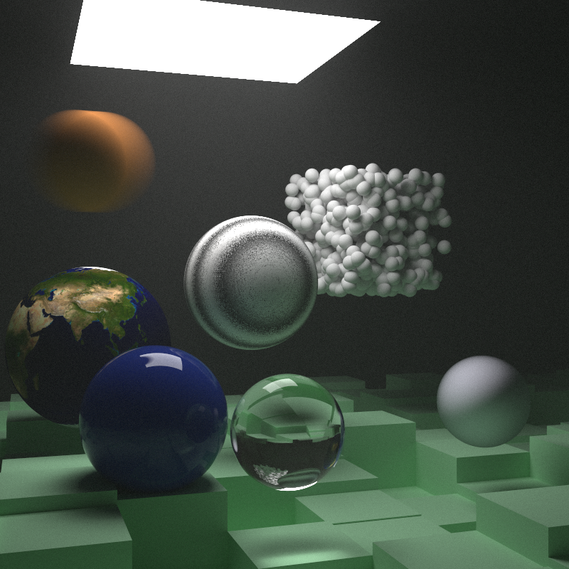

Porch
Porch is a single threaded software raytracer built as a learning excercise to deepen my understanding of ray tracing. I used Peter Shirley's Ray Tracing in One Weekend Book Series, as learning material for this project. The project can be found on my GitHub.
Note: This was not my first implementation of a raytracer, in fact it was the third time I gave this series a shot. This time around, I was planning to build a minimal scafolding to build upon as I discover new techniques. However, as I started digging a bit deeper into Physically Based Rendering: From Theory to Implentation (PBRT), I descovered some serious gaps in my mathematical base. Thus, I had two options. Option A: continue and learn the maths as I went, or Option B: stop and learn the maths, then continue in a few months. I chose the later approach because it is Option A that got me to this point of spotty fundamentals.

This is the final render of a version of Ray Tracing: The Next Week which I had implemented months ago